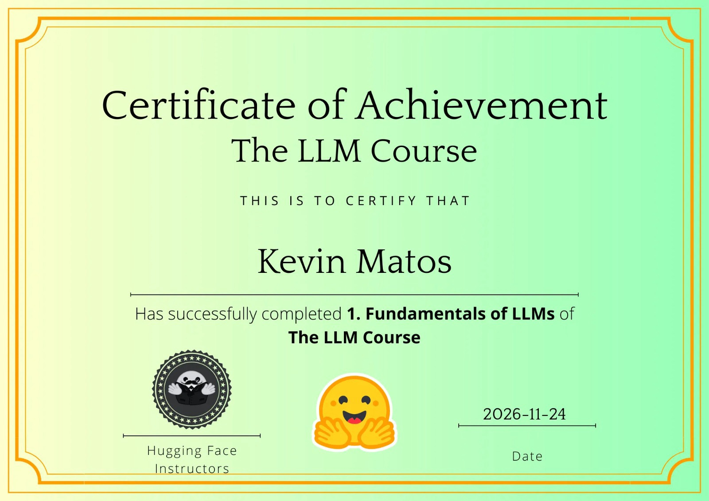
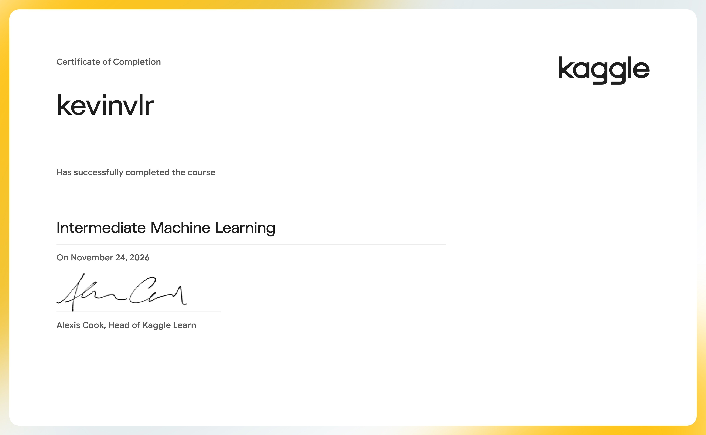
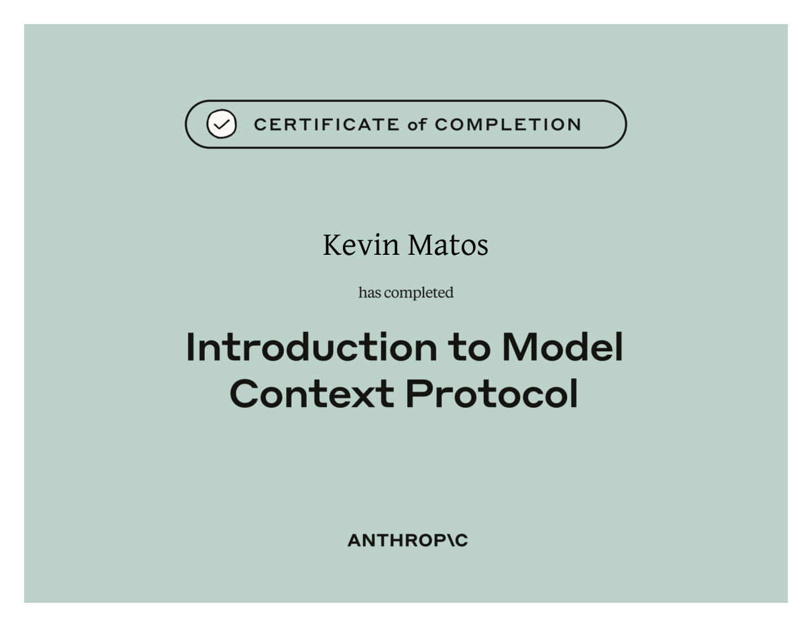
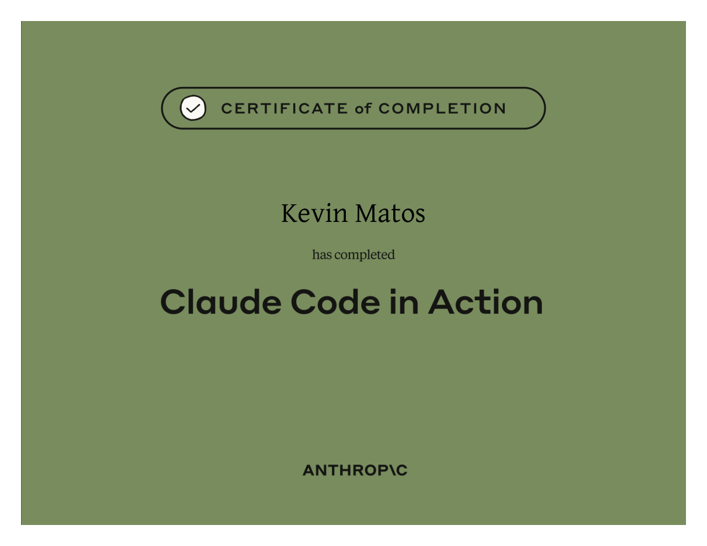
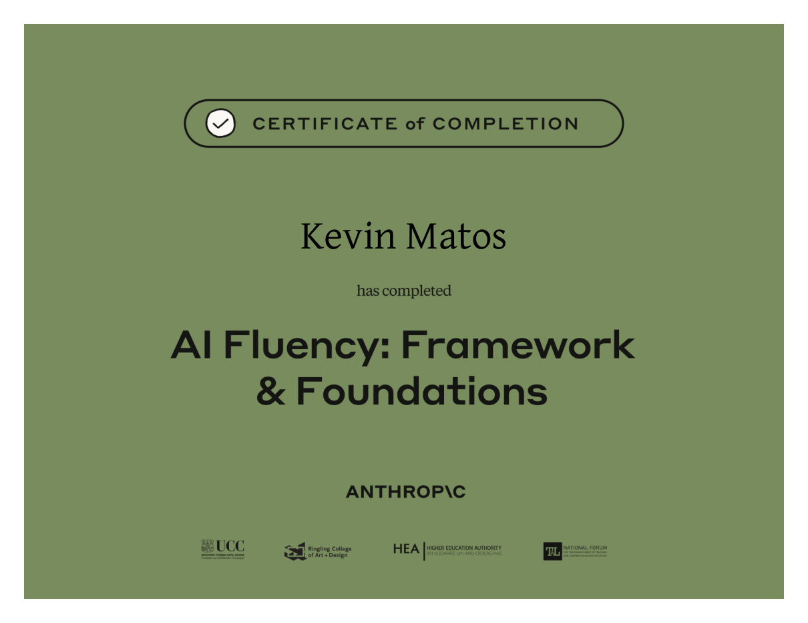
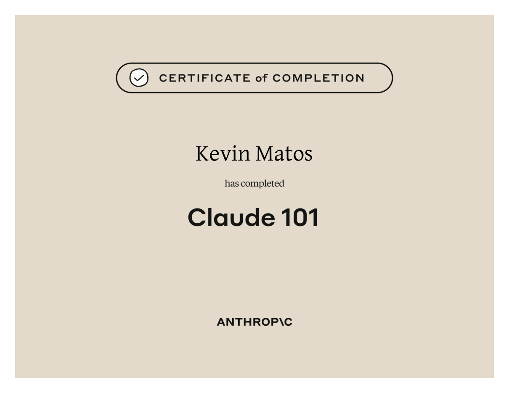
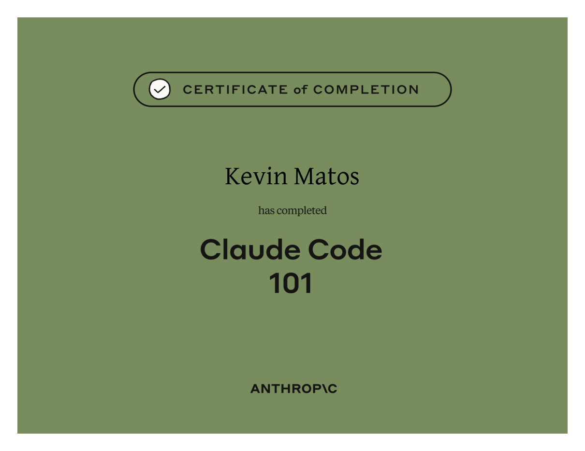
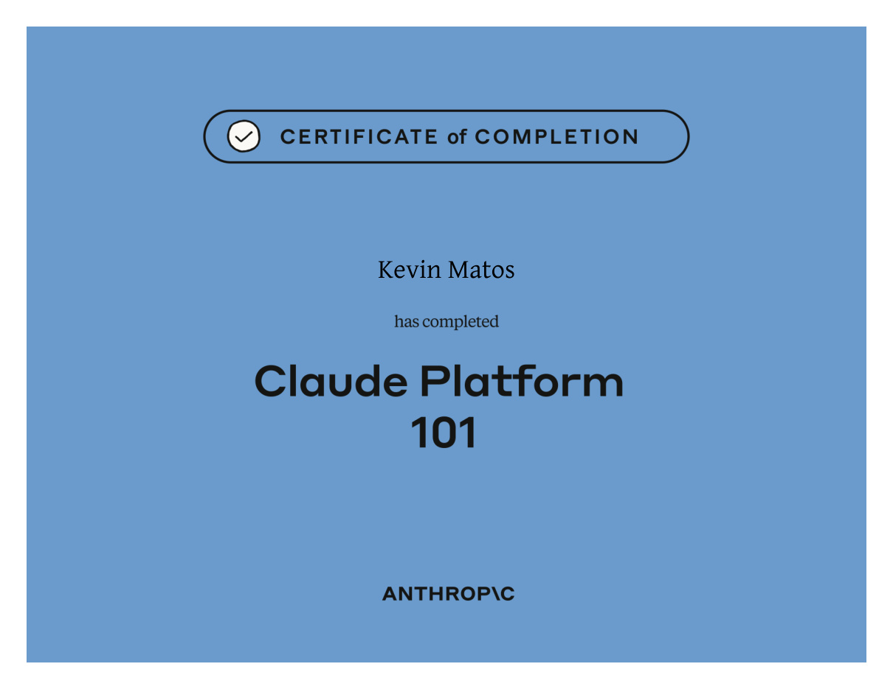
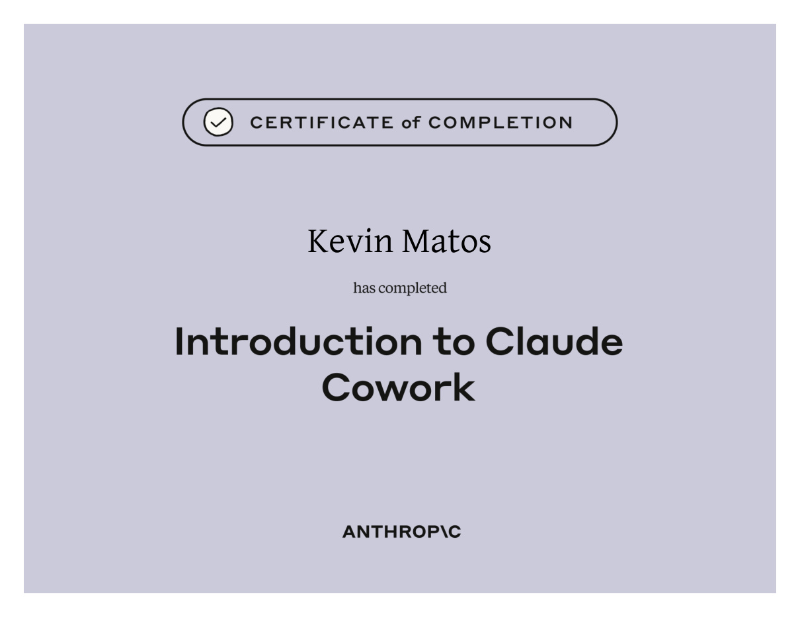

Certifications & languages
Always learning, with proof.
Every certificate links to its public verification page.
Portuguese
Native
Brazilian
Hugging Face

AI Agents Course
Certificate of Excellence. Final project scored 70% on GAIA.
Nov 2026 · Verify
Hugging Face

The LLM Course: Fundamentals of LLMs
Certificate of Achievement. Transformer architecture and how LLMs work under the hood.
Nov 2026 · Verify
Kaggle

Intermediate Machine Learning
Certificate of completion. Pipelines, cross-validation, XGBoost and data leakage.
Nov 2026 · Verify
Anthropic

Claude with the Anthropic API
API, tool use, RAG with embeddings and BM25, prompt caching, evals, MCP and agent workflows.
Nov 2026 · Verify
Anthropic

Introduction to Model Context Protocol
Building MCP servers and clients for tools and resources.
Nov 2026 · Verify
Anthropic

Claude Code in Action
Agentic development workflows with Claude Code.
Nov 2026 · Verify
Anthropic

AI Fluency: Framework & Foundations
Co-developed with University College Cork and Ireland's Higher Education Authority.
Nov 2026 · Verify
Anthropic

Claude 101
Certificate of completion. Final quiz 10/10.
Nov 2026 · Verify
Anthropic

Claude Code 101
Certificate of completion.
Nov 2026 · Verify
Anthropic

Claude Platform 101
Certificate of completion.
Nov 2026 · Verify
Anthropic

Introduction to Claude Cowork
Certificate of completion.
Nov 2026 · Verify